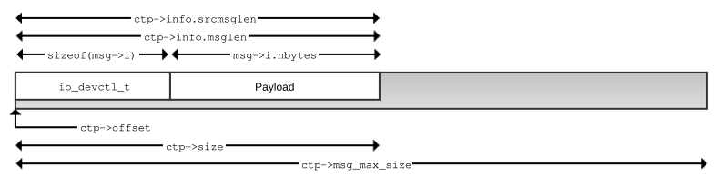
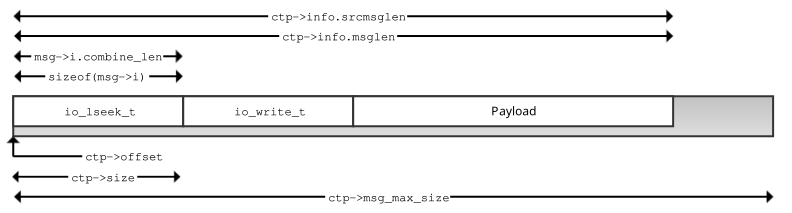
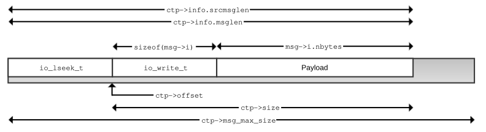
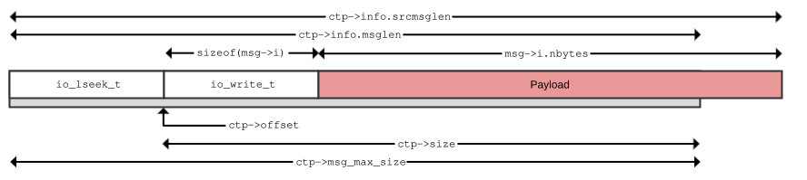

Attackers can take advantage of insufficient checking of the length and offset of resource manager messages.
Most messages, even ones such as _IO_WRITE that can be arbitrarily large, include a modest-sized header structure that must be validated when processing the message. It is a good idea to reject any message where the entire header structure is not contained within ctp->size bytes. In many cases, you know that a given message type won't exceed the size of ctp->msg_max_size (usually a bit more than 2000 bytes). Unless you require the message length to be larger than ctp->msg_max_size, you can simplify length checking by rejecting messages when ctp->size does not include the entire message.
You can prevent many errors by using ctp->size to validate data lengths
on short messages. Clients that QNX provides will not break if your resource manager rejects
messages that do not entirely fit in ctp->size, aside from the rare
exception that can be long (e.g., _IO_WRITE messages; see A simple io_write() example
in
Getting Started with the QNX OS).
Although this section discusses combine messages, the core libraries (and therefore legitimate
clients) do not combine more than a few messages.
if (ctp->size < (sizeof(msg->i) + extra)) {
return EBADMSG;
}where extra is the amount of extra data that should be there following the message header (msg->i).
To allow atomic operations, QNX OS combines some messages passed to
a resource manager (see Combine Messages
in Writing a Resource
Manager). A resource manager receives a message from the client over a QNX OS channel. That whole message, when processed by the resource
manager, might result in multiple embedded messages, which QNX OS
calls combine messages. This discussion of message checking refers to the whole message sent
by the client as the whole message. When a resource manager is accessing message data
contained in a message embedded in the whole message, it refers to it as the current
message.
In a combine message, the data for a particular message is offset. The resmgr_msgget() function handles this offset and should be used instead of MsgRead().
Some variables can be trusted without verification while others should be tested for sanity.
| Variable | Trusted? | Purpose | Security notes |
|---|---|---|---|
| ctp->size | Yes | Indicates how much data is available in the message buffer for the current message. This value includes the current message header. | Because this variable takes ctp->offset into account,
always use it instead of ctp->info.msglen to determine the
data available in a current message. Use the following formula to calculate how much
payload data is available in the current message: ctp->size - sizeof(msg->i) |
| ctp->msg | Yes | A pointer to the beginning of the buffer allocated for messages. The buffer size is ctp->msg_max_size bytes. | Use to create a response message that minimizes the risk of exceeding ctp->msg_max_size. Make sure that you save data from msg before you write to ctp->msg. |
| ctp->info.msglen | Yes (see notes) | Indicates the amount of the whole message received by the resource manager and stored in ctp->msg. | Do not use, because it does not take into account combine messages. Use ctp->size instead. |
| ctp->info.dstmsglen | Yes | Indicates the size of the buffer that the client uses to receive the reply. | If the size of the reply is bigger than the client's reply buffer, the extra data is discarded without error. In most cases, if the client's reply buffer is not long enough for the response, it is better to return an error than to silently discard data. |
| ctp->msg_max_size | Yes | Indicates the maximum amount of data that can be stored in the ctp->msg buffer. | Should be used to ensure that enough space is available to hold a response message created by the resource manager; otherwise, memory corruption can occur. If the current message is being used to create the output message, the current message might be a combine message sitting on the edge of the resource manager's receive buffer, making it too small to hold the response. |
| sizeof(msg->i) | Yes (see notes) | Size of the incoming message header. | Message headers are unions of an input msg->i and output msg->o structure. Because the size of the input structure is not always the same as that of the output structure, it should never be used to calculate space for an output message. |
| sizeof(msg->o) | Yes (see notes) | Size of the outgoing reply message header. | Message headers are unions of an input msg->i and output msg->o structure. Because the size of the output structure is not always the same as the input structure, it should never be used to calculate the size of an input message. |
| msg->i.nbytes | No | Length of the current message payload. | Supplied by the client. Do not use for _IO_DEVCTL messages. Verified by iofunc_write_verify(), but not by iofunc_read_verify(). It should be sanity checked or compared to trusted length values. For _IO_READ, it specifies the amount of data the client wants to read. For other message types, its meaning can be different. |
| ocb->offset | No (see notes) | Used to track the current lseek() offset in a file. | The default resource manager lseek() allows manipulation of the OCB offset variable without any sanity checks. When servicing a request that would typically use this offset, such as a read or write from a data buffer, the offset should be checked to ensure it falls within the buffer being read. Also note that because this is a signed integer, checks should detect and reject unwanted negative values. For resource managers that use a custom OCB, this value typically becomes ocb->hdr.offset. |
| msg->i.combine_len | No | Used to identify combine messages and by the underlying resource manager library to determine the length of the current combine message. |
Supplied by the client. Do not use. Instead, perform length checks using ctp->size. To determine if this is the last message in a combine message, check for a non-zero ctp->rcvid instead of checking the _IO_COMBINE_FLAG flag. |
| ctp->offset | Yes | Indicates the location of the current message in the receive buffer (of size ctp->msg_max_size bytes). Used for combine messages. |
You should not use this variable. To determine the remaining length of the message buffer, the size of the current
message, and so on, use the following methods instead:
|
| ctp->info.srcmsglen | Yes | Indicates the number of bytes the client attempted to send, which might exceed the number of bytes a whole message received by a resource manager can hold. |
The base resource manager library does not do any checks on the length of the payload that is attached to some resource manager messages.
The following set of diagrams illustrate how length values relate to one another:

In the well-formed _IO_DEVCTL message in Figure 1, a client sends a message that contains no combine messages. The message fits within the size of the receive buffer used by the server (shown as a shaded rectangle). The ctp->msg_max_size variable indicates the size of the resource manager's receive buffer. In a well-formed and small message, such as the one shown, the majority of the message length values line up. It is easy to see that ctp->info.srcmsglen, which indicates the length of data the client passed to MsgSend(), matches ctp->info.msglen, which indicates the size of the whole message received by the resource manager. Because this message contains no embedded combine messages, ctp->offset is 0. The ctp->size variable is equal to both ctp->info.srcmsglen and ctp->info.msglen, which is expected as it typically indicates the difference between ctp->info.msglen and ctp->offset. Finally, the message contains an accurate msg->i.nbytes value that indicates the size of the message data payload. This payload contains some well-formed data that the devctl() handler in the resource manager expects. Of course, msg->i.nbytes does not have to be accurate.

As mentioned earlier, the resource manager library allows multiple messages that are sent to it to be combined into a whole message. This approach reduces the number of round trips required between a client and a server for some combinations of messages (e.g., an open() followed by a stat() call).
In Figure 2, the whole message contains two embedded combine messages: an lseek() message followed by a write() message. As expected, ctp->info.srcmsglen and ctp->info.msglen both reflect the size of the whole message. As noted earlier, the ctp->offset value is typically used to indicate the location of the current message being processed in the whole message. When handling the io_lseek_t message first, ctp->offset is zero, as expected.
When it detects a combine message, the resource manager library sets the ctp->size length to the length of the current message only. The resource manager library detects a combine message when the _IO_COMBINE_FLAG flag is set in the combine_len structure member (e.g., as found in the _io_devctl structure). When the resource manager library detects the _IO_COMBINE_FLAG, it removes the flag from the member and verifies that the number of bytes specified by combine_len are actually available. If sufficient bytes are available, it sets ctp->size to the combine_len value to indicate how much data is available for the current message being passed to the associated handler. For the last message in a combine message, ctp->size is the difference between ctp->info.msglen and ctp->offset (the remaining space in the message buffer).

Figure 3 shows the values after the second combine message (the io_write_t message) is passed to the handler as the current message. The ctp->offset value has been adjusted to point to the base of the current message. The ctp->size is the remaining size of the message (not msg->i.combine_len). The msg->i.combine_len value is omitted because for the last message, the _IO_COMBINE_FLAG flag is not set and the msg->i.combine_len should be ignored.

In Figure 4, the set of messages is created by calling writeblock(). Part of the payload for the io_write_t message is beyond the buffer and has not been copied to the resource manager from the client. The result of any attempt to access the second part of the payload result is a buffer overread. To access the complete payload, the resource manager must go back to the client with a resmgr_msgget(). You must check the ctp->size (or call resmgr_msggetsize()) when you determine whether sufficient bytes of the payload are available without having to go back to the client. You also must check ctp->info.srcmsglen because msg->i.nbytes is supplied by the client and cannot be trusted to correctly specify the number of bytes of payload that are available. The resmgr_msgget() call returns the number of bytes actually read (from the local message buffer, the client's message buffer, or both), which can be used to check whether the payload is the expected size. Finally, you must check that msg->i.nbytes matches your expected payload size.
The following functions perform length checking in addition to what the base resource manager library does prior to calling the resource manager handler function:
| Function | Additional checks |
|---|---|
| iofunc_read_verify() | If _IO_XTYPE_OFFSET or _IO_XTYPE_READCON is set,
it verifies that there is enough space to hold them. (See
Handling the xtype memberin Writing a Resource Manager.) |
| iofunc_write_verify() | If _IO_XTYPE_OFFSET or _IO_XTYPE_READCON is set, it verifies that there is enough space to hold them. It also verifies that msg->i.nbytes is not greater than the size of the message actually sent (ctp->info.srcmsglen - ctp->offset - sizeof(io_write_t)). It does not verify that the current buffer contains all the data to write. |
For an example that includes length and permission checking, see A
simple device control I/O function handler example
.
If ctp->rcvid = 0 in your resource manager handler, you cannot return data to the client. Instead of attempting to send data, return an error.